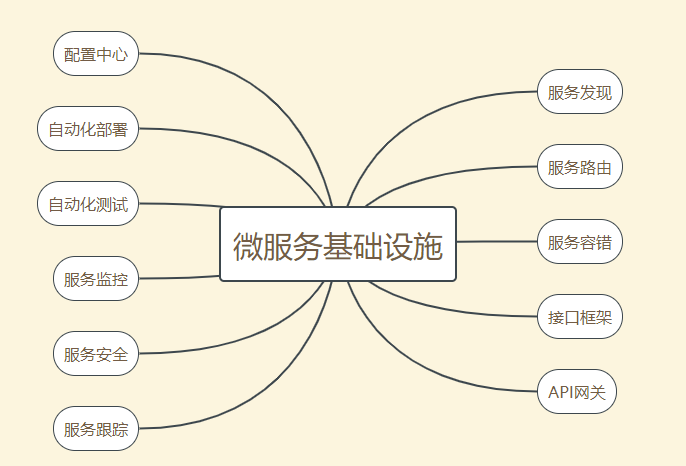

34-微服务架构最佳实践 - 方法篇
前言
微服务的陷阱：
- 微服务拆分过细，过于强调"small"。
- 微服务基础设施不完善，忽略了"automated"。
- 微服务并不轻量级，规模大了之后，"lightweight"不在适应。
针对以上问题，后面将介绍微服务的最佳实践。
服务粒度
针对微服务拆分过细的问题，可以基于团队规模进行拆分，可以使用“三个火枪手”原则，即一个微服务三个人负责开发。当我们在实施微服务架构时，根据团队规模来划分微服务数量，如果业务不断发展，团队规模扩大，再将已有的微服务进行拆分。
为什么是3个人，不是4个，也不是2个？
- 从系统规模来看，3个人负责开发的系统，系统的复杂度刚好达到每个人能够全面理解整个系统，又能够进行分工的粒度。2个人开发的系统，系统复杂度不够，开发人员可能觉得无法体现自己的技术实力。4个人开发的系统，系统复杂度又会让开发人员对系统的细节理解不够深。
- 从团队管理来看，3个人可以形成一个稳定的备份，即便1个人休假或调配到其它系统，剩余2个人也可以支撑。如果是2个人，抽调一个人后剩余的1人压力太大。如果是1个人的，就是单点了，没有备份，在有些情况下是非常危险的，比如休假了，系统出了问题怎么办?
- 从技术提升角度来看，3个人可以形成有效的讨论，又能够快速达成意见的一致。
“三个火枪手”原则主要应用于微服务设计和开发阶段，如果微服务经过一段时间发展后已经比经稳定了，处于维护期，不需要那么多开发了，就可以缩减人员。
拆分方法
基于“三个火枪手”原则，我们可以计算出拆分合适的服务数量，但具体怎么拆分服务也是有技巧的。
基于业务进行拆分
这个最常见的一种拆分方式，将系统中的业务模块按照职责范围识别出来，每个单独的业务模块拆分成一个独立的服务。
基于业务的拆分虽然看起来很直观，但在实践中最常见的问题就是团队成员对于“职责”的理解差异很大，经常会出现争论，难以达成一致意见。例如，对于一个电商系统，第一种方式是将服务拆分成“商品”、“交易”、“用户”3个服务，第二种方式是将服务拆分成“商品”、“订单”、“支付”、“发货”、“买家”、“卖家”6个服务，哪种正确呢？是否是越细越好呢？
导致这种困惑的主要根源在于从业务的角度来拆分的话，规模粗和规模细都没有问题，因为拆分基础是业务逻辑，要判断拆分粒度，不能从业务角度，而是要根据之前的“三个火枪手”的原则，计算一下大概的服务数量范围，然后再确定合适的“职责范围”，否则就可能出现划分过粗或者过细的情况，而且大部分情况下会出现过细的情况。
基于可扩展拆分
将系统的业务按照稳定性进行排序，将已经成熟和改动不大的服务拆分成稳定服务，将经常变动或处于迭代的服务拆分成变动服务。稳定服务的粒度可以粗一些，即使逻辑上没有强关联的服务，也可以放在一个子系统里中，例如将“日志”服务和“升级”服务放在一个系统中。不稳定的服务粒度可以细一些，但也不要太细，始终记住要控制服务的总数量。
基于可靠性进行拆分
将系统中业务模块按照优先级进行排序，将可靠性要求高的核心服务和可靠性要求低的非核心服务拆分出来，然后重点保护核心服务的高可用。具体拆分成，核心服务可以是一个或者多个，只要最终服务数量满足“三个火枪手”原则即可。
这样拆分的好处在于：
- 避免非核心服务故障影响核心服务。
- 核心服务高可用方案可以更简单。
- 能够降低高可用成本。
基于性能进行拆分
基于性能进行抓拆分与基于可靠性拆分相似，将性能要求高或者性能压力大的模块拆分出来，避免性能压力大的服务影响其它服务。常见的拆分方式和具体的性能瓶颈有关，可以拆分Web服务，数据库、缓存等。
以上几种拆分方式不是多选一，而是可以根据实际情况进行自由组合。
基础设施
大部分人关注微服务的“small”和“lightweight”特性，实际上决定微服务成败恰好是被大部分人忽略的“automated”。即使微服务划分不合理，实际落地后如果团队遇到问题，自然会想到拆分服务或都合服务。但是如果"automated"相关的基础设施不键全，那么微服务就是焦油坑，将陷入各种陷阱中去。
其基础设施如下图：

微服务并不是很多人认为的那样的简单和轻量级。要做好微服务，这些基础设施是必不可少的。可以说，微服务并没有减少复杂度，而是把复杂度从ESB转移到了基础服务。其实“服务发现”、“服务路由”等都是ESB的功能，只是在微服务中剥离成独立的基础系统了而已。
虽然微服务的基础设施是一个庞大的工程，但也不必担心自己公司小而无法实施微服务。其一在于已经有开源的微服务基础设施全家桶，如spring cloud。其二在于，如果微服务的数量不是很多的话，并不是每一个基础设施都是需要的。
可以按照以下优先级顺序搭建微服务基础设施：
- 服务发现、服务路由、服务容错，这是最基本的微服务基础设施。
- 接口框架、API网关：主要是为了提高开发效率、接口框架是提升内部服务的开发效率、API网关是为了提升与外部服务对接的效率。
- 自动化部署、自动化测试、配置中心：主要是为了提升测试和运维效率。
- 服务监控、服务跟踪、服务安全：主要是为了提升监控效率。
3和4会随着微服务结点数的增加而越来越重要，但在微服务结点数比较少的时候，可以通过人工的方式支撑，虽然效率不高，但也基本可以支撑。